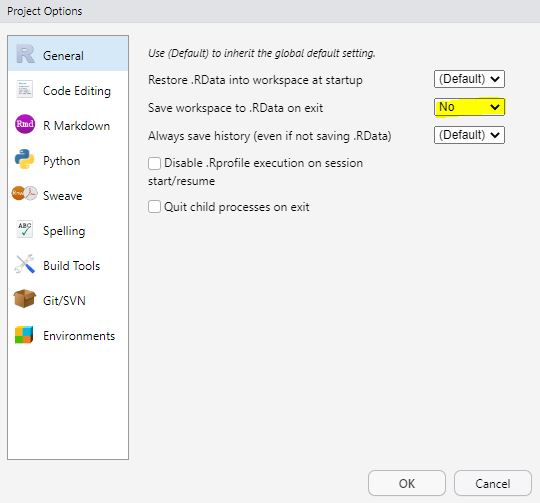

RStudio Projects und RMarkdown
Gerda Wyssen ![]()
Daniel Fitze
RStudio Projects
RStudio Projekte ermöglichen vereinfachtes Arbeiten mit R, da alle Dateien, die in diesem Projektordner gespeichert sind, direkt verfügbar sind. So kann die aktuelle R Session abgespeichert werden und beim nächsten Öffnen kann dort weitergearbeitet werden wo man aufgehört hat. Projekte ermöglichen somit ein stabiles working directory für ein Datenanalyse-Projekt.
Öffnen Sie RStudio.
Erstellen Sie ein neues RStudio-Project
Klicken Sie dafür auf
File>New ProjectBenennen Sie das Project
neurosci_complab_rmarkdownund speichern Sie es an einem sinnvollen Ort auf Ihrem Computer.
Es empfiehlt sich bei RProjekten eine Einstellungsänderung (Tools> Project Options...) vorzunehmen, so dass die aktuell gespeicherten Variablen bei jedem Schliessen vom Projekt gelöscht werden. Dies verhindert, dass der aktuelle Code nur aufgrund früherer Speicherung läuft.

R Markdown
R Markdown ist eine simple Markup-Sprache, die es ermöglicht reproduzierbare Data Reports zu erstellen. R Markdown ist praktisch, weil Text und Code gleichzeitig verwendet werden kann und der Output des Codes angezeigt wird. Text kann verwendet werden, ohne dass vor jeder Zeile ein # zum Auskommentieren gesetzt werden. Zudem kann Text formatiert werden, also z.B. dick oder kursiv dargestellt werden oder Auflistungen beinhalten.
Das Skript der R Markdown Files wird geknittet und so - je nach Wahl - zu einem HTML, PDF oder Word-Dokument zusammengefügt. R Markdown kann also beispielsweise eine Text-Beschreibung, Code zum Erstellen einer Grafik und auch die erstellte Grafik in einem Dokument kombinieren.
Das working memory innerhalb eines R Markdown Files ist der Speicherort des Files. Von dort aus können somit relative Pfade angegeben werden. Das hat den Vorteil, dass andere Benutzer denselben Projekt-Ordner auf Ihrem Computer mit unveränderten Pfaden verwenden können.
R Markdown File erstellen und ausführen
Erstellen Sie ein neues
.Rmd-File (File>New File>R Markdown).Geben Sie einen Titel und Ihren Namen ein und wählen Sie
HTMLals Output-Format.Speichern Sie dieses Dokument unter dem Namen
rmarkdown_exampleab.
Welches Format (Endung) hat das abgespeicherte R Markdown Skript nun in Ihrem Ordner?
Knitten
Mit Knit wird das R Markdown Skript ausgeführt und eine zusätzliche Datei wird erstellt, z.B. ein html-File.
Führen Sie das File mit Knit aus und vergleichen Sie das R Markdown Skript mit dem Output den Sie erhalten haben. Was fällt Ihnen auf?
- Was ist nicht mehr zu sehen?
- Was ist zusätzlich zu sehen?
- Was hat sich im Projekt-Ordner verändert?
YAML header
Am Anfang des R Markdown Skripts befindet sich der YAML header. Hier werden Informationen zu Titel, Autor:Innen, Datum, Outputformat, Literaturverzeichnis und Layout festgelegt.
Das Layout kann unter themegeändert werden. Das kann beispielsweise wie folgt aussehen:
output:
html_document:
theme: cosmoAchtung: Die Einrückungen müssen genau stimmen! Hier wurde das theme namens cosmo ausgewählt. Mögliche andere themessind z.B. default, cerulean, journal, flatly, darkly, readable, spacelab, united, cosmo, lumen, paper, sandstone, simplex, yeti.
Geben Sie dem Dokument einen neuen Titel z.B.
R Markdown EinführungÄndern Sie das Layout so, dass es Ihnen gefällt.
Text erstellen in R Markdown
Text kann in R Markdown Files nicht nur geschrieben, sondern auch relativ simpel formatiert werden.
👉 Hier können Sie das Cheatsheet herunterladen. Auf der rechten Seite finden Sie die Informationen für die Textformatierung.
Es empfiehlt sich das Skript anfangs häufig zu knitten, so findet man den Fehler schneller, weil man noch weiss, was man als letztes verändert hat. Code kann aber auch einfach innerhalb der Code-Chunks überprüft werden.
Löschen Sie alles bis auf den YAML-Header
Schreiben Sie im Textbereich eine Überschrift für ein Kapitel, ein Unterkapitel und normalen Text.
Schreiben Sie im Text etwas kursiv und etwas fett.
Erstellen Sie im Textbereich eine Liste mit 3 Punkten.
Schreiben Sie
alphainnerhalb von$, was passiert?Fügen Sie die untenstehende Formel in den Text ein. Verwenden Sie dafür zwei Dollarzeichen am Anfang und am Ende. Was passiert?
\[ a^2 + b^2 = c^2 \]
Fügen Sie einen Link ein, knitten Sie das File und schauen Sie ob der Link funktioniert. Können Sie einen Link nur mit einem unterstrichenen Text anzeigen, so dass die Linkadresse nicht sichtbar ist?
Fügen Sie ein Bild ein. Speichern Sie dieses Bild zuerst in einem Ordner namens
imgim Projektordner.
Code erstellen in R Markdown
Code muss jeweils in einem Code-Chunk eingefügt werden. Ein Code-Chunk kann unter Code > Insert Chunk eingefügt werden oder mit dem Kürzel Ctrl+Alt+ I.
Code-Chunks werden mit ``` begonnen und beendet. In den geschweiften Klammern steht r, das bedeutet dass der Code in R geschrieben ist. In dieser Klammer kann dem Code-Chunk einen Namen gegeben und bestimmt werden, ob der Code ausgeführt und z.B. nur angezeigt werden soll, sowie ob der Output des Codes angezeigt werden soll.
Mit dem grünen Pfeil kann der Code-Chunk einzeln ausgeführt werden. Aber auch einzelne Zeilen können ausgeführt werden, genau so wie in einem .R- Skript.
Erstellen Sie einen Code-Chunk, der ausgeführt, aber nicht angezeigt wird. Erstellen Sie eine Variable mit dem Namen
numbers, die 10 Zahlen enthält.Erstellen Sie ein Code-Chunk, der ausgeführt wird und dessen Output angezeigt wird. Berechnen Sie in diesem Chunk den Mittelwert und die Standardabweichung von
numbers.Erstellen Sie einen Plot mit
plot(numbers).Knitten Sie das File, um zu überprüfen, ob alles funktioniert
👉 Schauen Sie für Hilfe nochmals im Cheatsheet nach oder drücken Sie auf das Zahnrädchen-Symbol beim Code-Chunk.
Für Fortgeschrittene:
Testen Sie, ob Sie Ihr File auch zu einem PDF knitten können.
Erstellen Sie eine Tabelle
Erstellen Sie einen Glossar
Erstellen Sie ein Dokument mit Reitern oben (z.B. Data, Preprocessing, Analysis, Conclusions)
Fügen Sie interaktive Elemente ein.
Reuse
Citation
@online{wyssen,
author = {Wyssen, Gerda and Fitze, Daniel},
title = {RStudio {Projects} Und {RMarkdown}},
url = {https://kogpsy.github.io/neuroscicomplabFS24//pages/chapters/rmarkdown.html},
langid = {en}
}